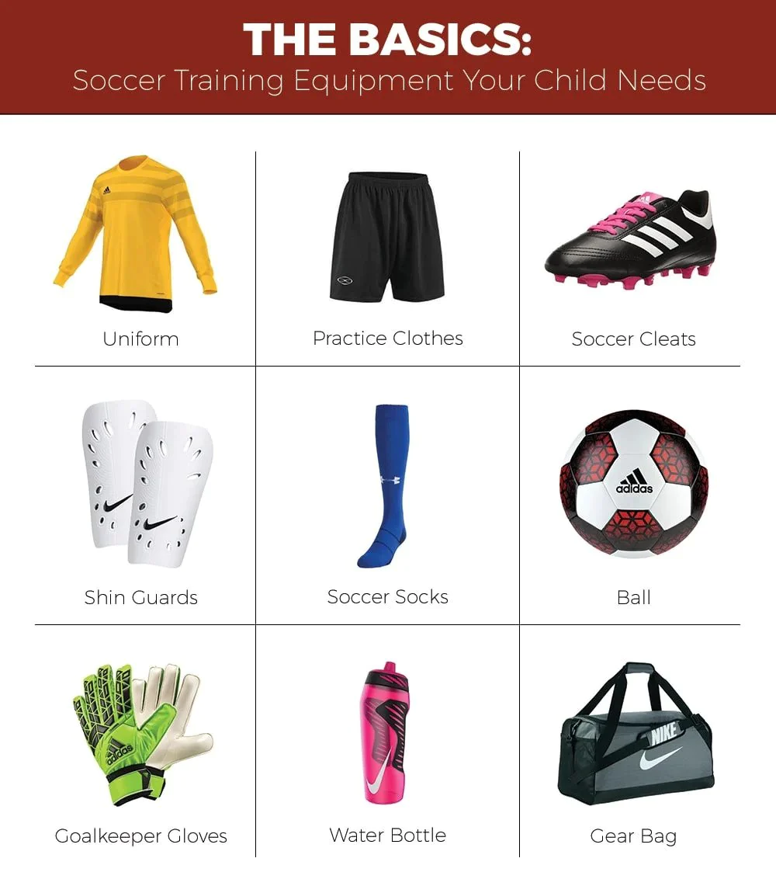

Football
(Design,Size and Weight, technology)
Design:
The traditional soccer ball has a spherical shape, composed of 32
panels stitched together. These panels are often hexagons and
pentagons, creating a recognizable pattern known as a truncated
icosahedron.
The outer covering is usually made of synthetic leather or other
durable materials designed to withstand wear and tear during play.
Size and Weight:
balls come in different sizes, designated by numbers. The standard
sizes are 3, 4, and 5.
Size 3: Typically used for younger players.
Size 4: Commonly used in youth and indoor soccer.
Size 5: The standard size for adult and professional play.
The weight of a regulation soccer ball is typically between 14 and
16 ounces (400-450 grams).
Technology:
Modern soccer balls often feature advanced technology for improved
aerodynamics, durability, and performance. Some may have textured
surfaces or special bonding techniques to enhance control and
accuracy.
The soccer ball is a fundamental and iconic element of the sport,
symbolizing the essence of the game and serving as a crucial tool for
players to showcase their skills.
Football Fields

Cleats
(Design,Materials,Types and Technology)
Design:
Soccer cleats typically have a low-cut design, providing a snug fit
around the foot and ankle to enhance agility and maneuverability.
The outsole (bottom of the shoe) features studs or cleats, which
provide traction on the playing surface, usually grass or turf. The
stud configuration can vary based on the type of surface and playing
conditions.
Materials:
The upper part of soccer cleats is often made from synthetic
materials or leather, offering a balance of durability, flexibility,
and comfort. Leather cleats, particularly kangaroo leather, are
prized for their softness and excellent ball control.
The insole and midsole provide cushioning and support, absorbing
impact during running and kicking.
Types:
Firm Ground (FG): Suitable for most natural grass surfaces, these
cleats have molded or detachable studs for optimal traction.
Soft Ground (SG): Designed for wet or muddy conditions, SG cleats
have longer, often detachable studs for enhanced grip on softer
surfaces.
Artificial Ground (AG): Intended for artificial turf, AG cleats have
shorter studs that provide traction without damaging the playing
surface.
Indoor (IN): Designed for indoor soccer or futsal, these cleats have
a non-marking rubber sole for better grip on indoor courts.
Technology:
Modern soccer cleats often incorporate advanced technologies for
improved performance. This may include features like knitted uppers
for a sock-like fit, special lacing systems for better lockdown, and
materials designed for lightweight and durability.
Soccer cleats are an essential part of a player's gear, contributing to
their ability to control the ball, make precise movements, and navigate
the field effectively. The choice of cleats depends on factors such as
playing surface, playing style, and personal preference.
Main equipment
(shin pads,long socks,goalkeeper gloves and shirts)

Shin Guards:
Shin guards are protective equipment worn by players to shield their
shins from injuries during the game.
They are typically made of lightweight materials like plastic or
foam, with a hard outer shell to absorb impacts.
Shin guards are worn underneath the player's socks and are mandatory
in most organized soccer competitions to ensure player safety.
Long Socks:
Soccer players wear long socks that cover their shin guards and
provide added protection to the lower legs.
The socks are usually made of breathable and moisture-wicking
materials to keep players comfortable during the match.
The color and design of the socks are often part of the team's
uniform and may match the team's colors or complement the jersey.
Goalkeeper Gloves:
Goalkeeper gloves are specialized gloves worn by goalkeepers to
protect their hands and enhance their ability to catch and handle
the ball.
They typically feature latex or foam palms for better grip and
impact absorption.
Goalkeeper gloves come in various cuts (flat cut, roll finger, etc.)
and styles to accommodate different preferences and playing
conditions.
Soccer Shirts:
Soccer shirts, or jerseys, are the distinctive tops worn by players
as part of their team uniform.
Jerseys are often made of lightweight and breathable materials to
keep players cool during the game.
They typically feature the team's colors, logos, and sometimes
sponsor logos. Each player on a team wears a numbered jersey for
identification.
These items together make up the essential gear worn by soccer players,
contributing to both their safety and performance on the field. The
uniformity of these elements also helps create a cohesive team
appearance during matches.